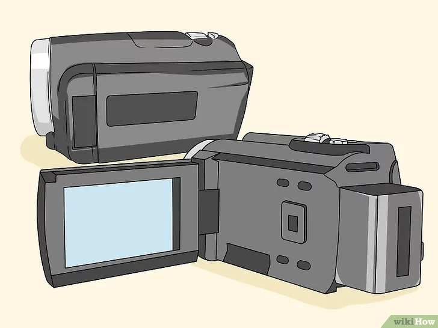
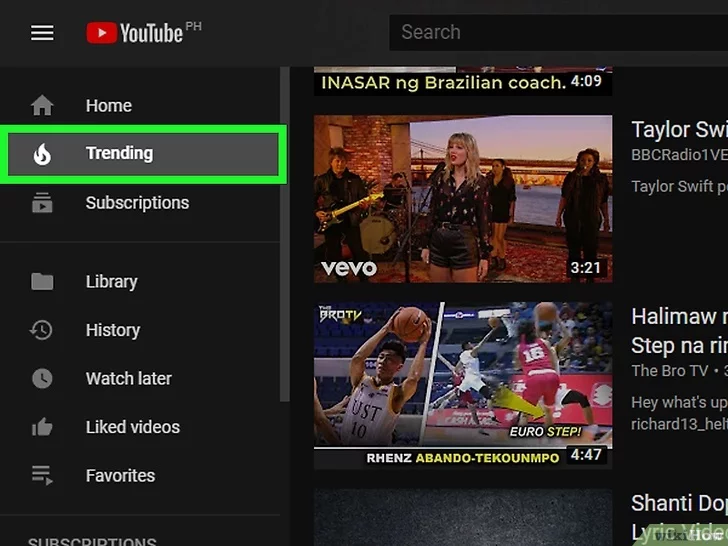
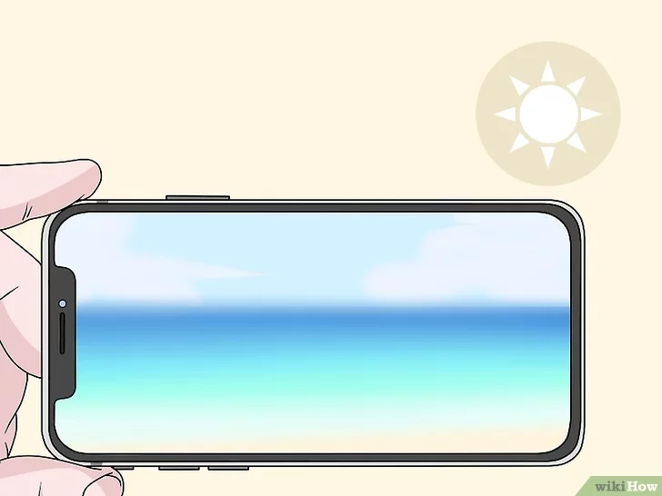

1.
Gunakan kamera video untuk rekaman berkualitas tinggi. Anda bisa mendapatkan kamera video berkualitas cukup dengan harga kurang dari 750 ribu rupiah di situs-situs jual beli seperti Bhinneka atau Lazada. Anda jugabisa membeli kamera video berkualitas tinggi dengan dana sekitar 1,5 juta rupiah. Kamera video biasanya memiliki kualitas tampilan yang lebih baik dibandingkan ponsel pintar atau webcam.
Kebanyakan kamera video modern dilengkapi dengan kartu SD lepas pasang (removable) yang dapat digunakan untuk memindahkan video dari kamera ke komputer. Periksa kembali perangkat untuk memastikan perangkat kamera perekam yang dipilih memiliki kartu SD sebelum membelinya.

2.
Cobalah ikuti tren video terkini. YouTube memuat video-video dari jutaan pengguna, tetapi beberapa jenis video lebih populer daripada jenis video lainnya:
Video blog atau “vlogs” merupakan seri video yang diperbarui secara berkala dan menampilkan pembuat video yang membicarakan mengenai apa pun yang ada di pikirannya. Biasanya, video seperti ini berdurasi selama 10 menit atau kurang.
Video mengenai permainan video (video games-related video) menarik cukup banyak lalu lintas pengunjung, terutama jika Anda membahas keluaran-keluaran terbaru.
Tutorial dapat membahas mengenai beragam topik yang Anda kuasai.
Montase (montage) adalah video yang diisi oleh gambar atau klip video yang disesuaikan dengan jalannya musik.
Video hewan peliharaan (pet video) merupakan konten yang selalu populer. Video-video seperti ini umumnya direkam menggunakan perangkat genggam, seperti ponsel pintar atau camcorder. Sering kali, video ini menampilkan hewan peliharaan pembuat konten ketika sedang melakukan hal-hal lucu atau menantang.
Ulasan (review) merupakan blog video yang mengulas produk atau layanan tertentu. Agar lebih banyak orang yang menonton video seperti ini, Anda bisa menunjukkan sikap yang “pedas” atau lucu saat mengulas produk.
Video komedi mencakup beragam gaya dan pendekatan. Video seperti ini lebih cocok dibuat bersama teman-teman dan bisa menampilkan apa pun, dari mulai lelucon praktis, tarian konyol, sketsa terarah, dan lain-lain.

3.Mulailah merekam video
pastikan terdapat pencahayaan yang cukup. Jika memungkinkan, rekam video di siang hari menggunakan cahaya alami. Jika Anda ingin merekan adegan di malam hari, siapkan sumber cahaya agar orang-orang bisa melihat apa yang Anda rekam.
Jika Anda merekam diri sendiri, duduklah menghadap ke sumber cahaya, dan posisikan kamera ke arah Anda.
Langkah ini tidak berlaku untuk video-video cuplikan layar.

4. Edit video dengan menggunakan aplikasi pihak ketiga. Editing video bisa dilakukan dengan memakai smartphone maupun pada perangkat komputer.
5. Setelah melakukan editing langkah selanjutnya adalah mengupload video ke youtube dengan memasukan judul dan juga deskripsi video.